سیمرغکارا
راهنمای جامع کاربری
سامانهٔ یکپارچهٔ حضور و غیاب، منابع انسانی، کارتابل و میز کار، مرخصی و مأموریت و حسابداری — برای سازمانهای چندشرکتی
نسخهٔ تیر ۱۴۰۵
پلتفرم چندمستأجری (Multi-tenant)
رابط کاربری فارسی · راستچین · دارک
هر شرکت آدرس ورود اختصاصی خود را دارد؛ کارکنان فقط با «نام کاربری» و رمز عبور وارد میشوند و نیازی به وارد کردن ایمیل کامل نیست.
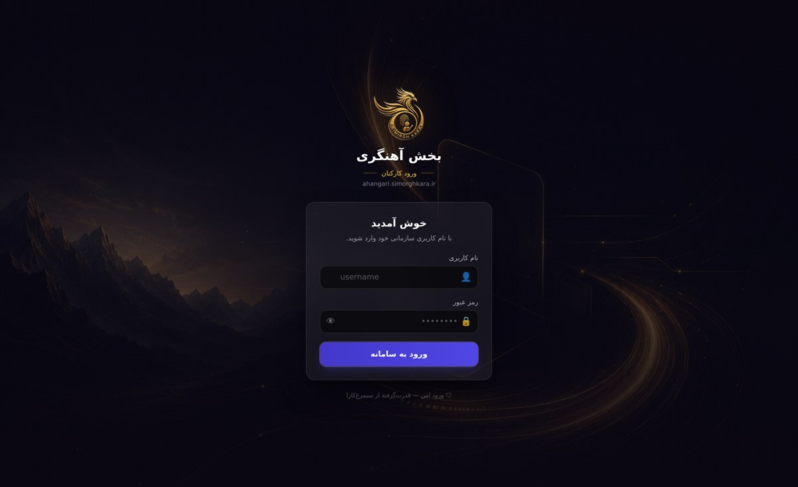
صفحهٔ ورود اختصاصی شرکت — نمایش نام و آدرس سازمان
- آدرس اختصاصی شرکت خود را در مرورگر باز کنید (مثل
/c/<نامشرکت>).
- نام کاربری سازمانی و رمز عبور خود را وارد کنید.
- برای اطمینان از درستی رمز، روی آیکن چشم بزنید تا رمز نمایش داده شود.
- روی «ورود به سامانه» کلیک کنید تا به داشبورد منتقل شوید.
نکته: مدیران پلتفرم و هولدینگ از صفحهٔ ورود اصلی با ایمیل وارد میشوند؛ کارکنان شرکت از آدرس اختصاصی شرکت با نام کاربری.
با ورود، نمای کلی وضعیت شما نمایش داده میشود: کارکرد ماه، ماندهٔ مرخصی، درخواستهای در جریان و کارهای نیازمند توجه.
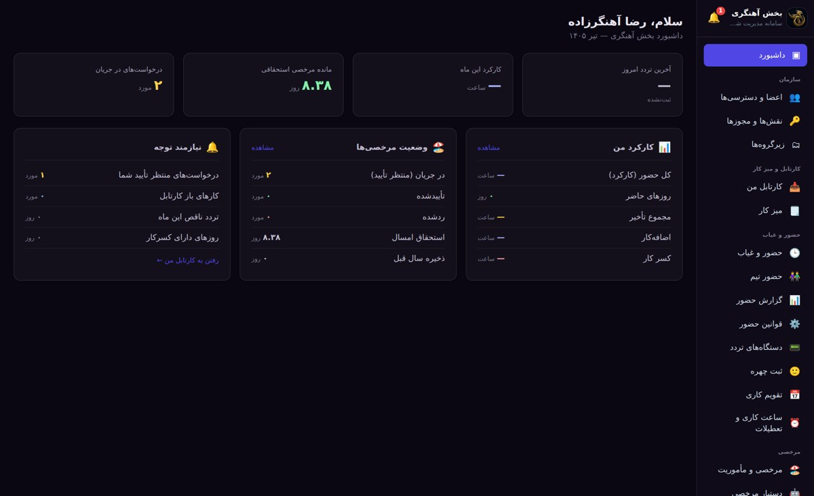
داشبورد — خلاصهٔ حضور، مرخصی و کارتابل در یک نگاه
- کارتهای بالا خلاصهٔ کارکرد ماه، ماندهٔ مرخصی و آخرین تردد را نشان میدهند.
- بخش «کارکرد من» جزئیات حضور، تأخیر، اضافهکار و کسرکار شماست.
- بخش «نیازمند توجه» میانبری به درخواستهای منتظر تأیید و کارهای باز است.
نکته: از دکمهٔ ☀/☾ در پایین نوار کناری میتوانید بین تم روشن و تاریک جابهجا شوید؛ تم تاریک پیشفرض است.
کارنامهٔ ماهانهٔ تردد شما با محاسبهٔ خودکار کارکرد، تأخیر، کسرکار و اضافهکار (با ضریب ۱.۴ برای کار در تعطیلات).
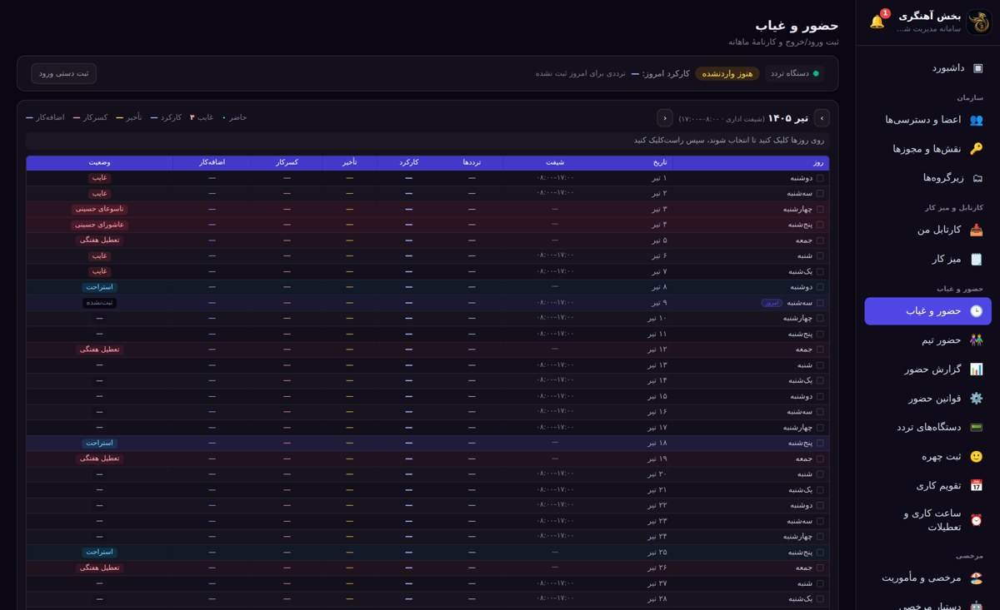
کارنامهٔ ماهانه — ترددها بهترتیب ورود ← خروج و وضعیت هر روز
- ستون «ترددها» ورود و خروج هر روز را بهترتیب راستبهچپ نشان میدهد.
- برای ثبت دستی، روی روز(های) موردنظر کلیک کنید تا انتخاب شوند.
- سپس راستکلیک کنید: «ثبت مرخصی»، «ثبت مأموریت» یا «ثبت تردد».
- سطر «جمع ماه» در پایین، مجموع کارکرد و آمار ماه را نشان میدهد.
نکته: سقف تعداد تردد در ماه/هفته را فقط کارگزینی تعیین میکند. تشخیص چهره و دستگاههای انگشتی نیز از همین بخش مدیریت میشوند.
تقویم تعاملی با رنگبندی روشن: امروز سبز، تعطیل رسمی قرمز، مناسبت زرد و روزهای کاری. کارهای میز کار و کارتابل نیز روی همان تقویم دیده میشوند.
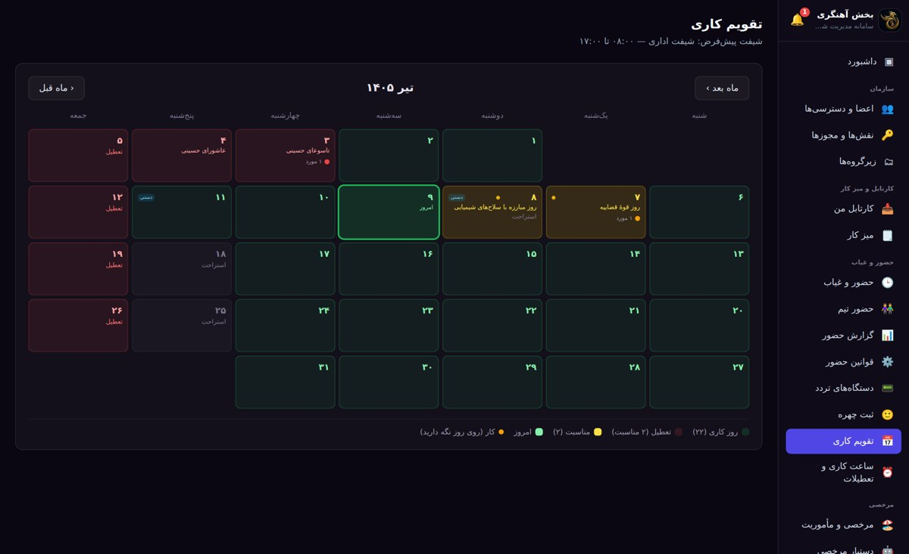
تقویم کاری — تعطیلات رسمی، مناسبتها و کارها در یک نما
- نشانگر ماوس را روی هر روز نگه دارید تا کارها و مناسبت آن روز را ببینید.
- روی یک کار دوبار کلیک کنید تا وضعیتش تغییر کند.
- تعطیلات رسمی بهصورت خودکار از منبع آنلاین و محاسبهٔ قمری دقیق بهروزرسانی میشوند.
نکته: ساعت کاری پیشفرض، شیفتها و تعطیلات اختصاصی شرکت از بخش «ساعت کاری و تعطیلات» قابل تنظیم است.
ثبت انواع مرخصی (روزانه و ساعتی) و مأموریت با فرم کامل، بههمراه گردشکار تأیید چندمرحلهای و نمایش ماندهٔ استحقاقی.
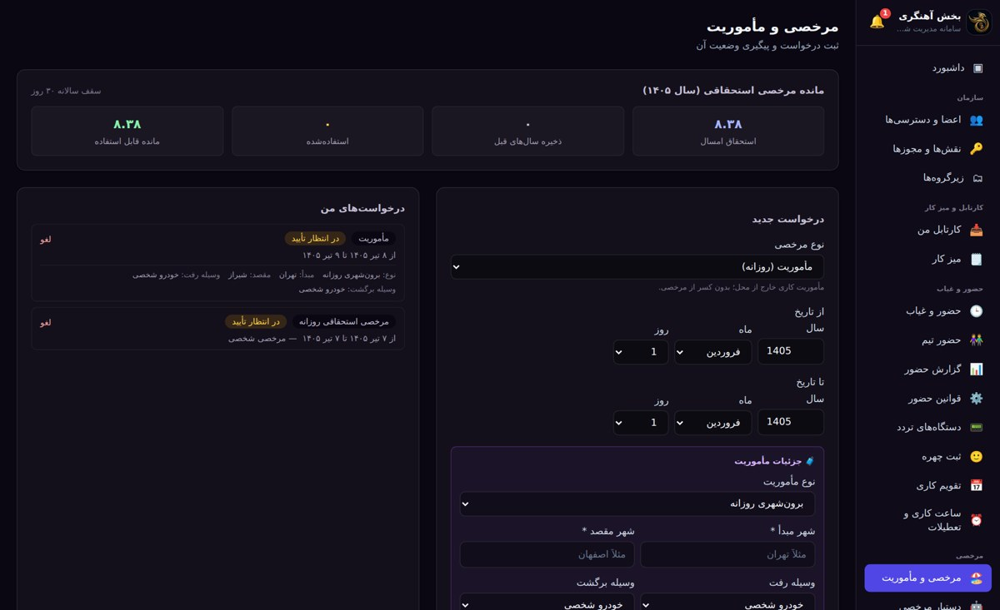
فرم درخواست — با انتخاب «مأموریت»، جزئیات کامل مأموریت باز میشود
- نوع مرخصی را انتخاب کنید؛ راهنمای هر نوع زیر آن نمایش داده میشود.
- برای مأموریت: شهر مبدأ/مقصد، وسیلهٔ رفت و برگشت، موضوع، پروژه و محل مراجعه را تکمیل کنید.
- پس از ثبت، درخواست به کارتابل تأییدکننده (مدیر و سپس کارگزینی) ارسال میشود.
- وضعیت درخواستهای خود را در ستون «درخواستهای من» دنبال کنید.
نکته: ماندهٔ مرخصی بهصورت خودکار محاسبه و تعطیلات میانی کسر نمیشوند. حداکثر ۳ روز مرخصی منفی مجاز است.
کارتابل من، صندوق ورودی کارهای ارجاعشده به شماست؛ میز کار، فضای تعریف و پیگیری وظایف تیمی با سطوح دسترسی است.
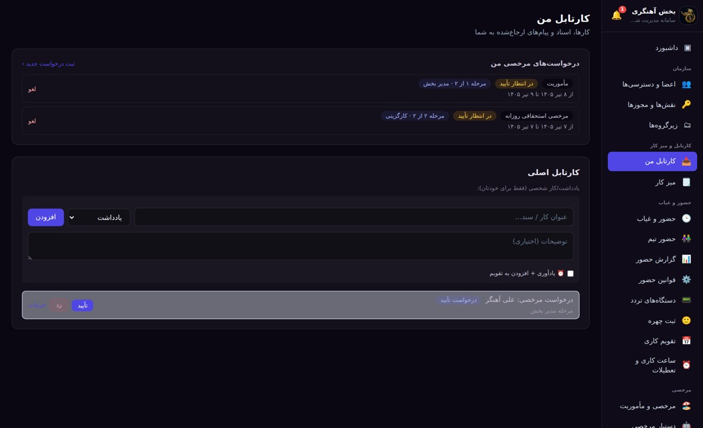
کارتابل من — کارها و درخواستهای نیازمند اقدام
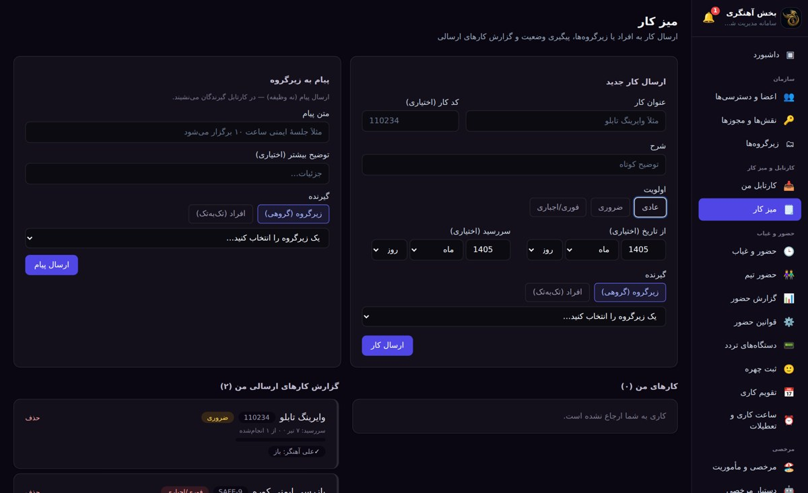
میز کار — تعریف وظایف، ارجاع و پیگیری وضعیت تیم
- کارهای ارجاعشده در «کارتابل من» جمع میشوند و قابل تغییر وضعیتاند.
- در «میز کار» وظیفهٔ جدید بسازید و به اعضا یا زیرگروهها ارجاع/انتقال دهید.
- میتوانید «پیام صرف» (بدون وظیفه) نیز به زیرگروه ارسال کنید.
نکته: عضو زیرگروه میتواند کار را فقط «انتقال» دهد؛ ارجاع و تخصیص در اختیار سطح دسترسی بالاتر است.
تعریف کارکنان، تخصیص نقش و گروه، تنظیم اطلاعات استخدامی و ساعت کاری شخصی هر فرد.
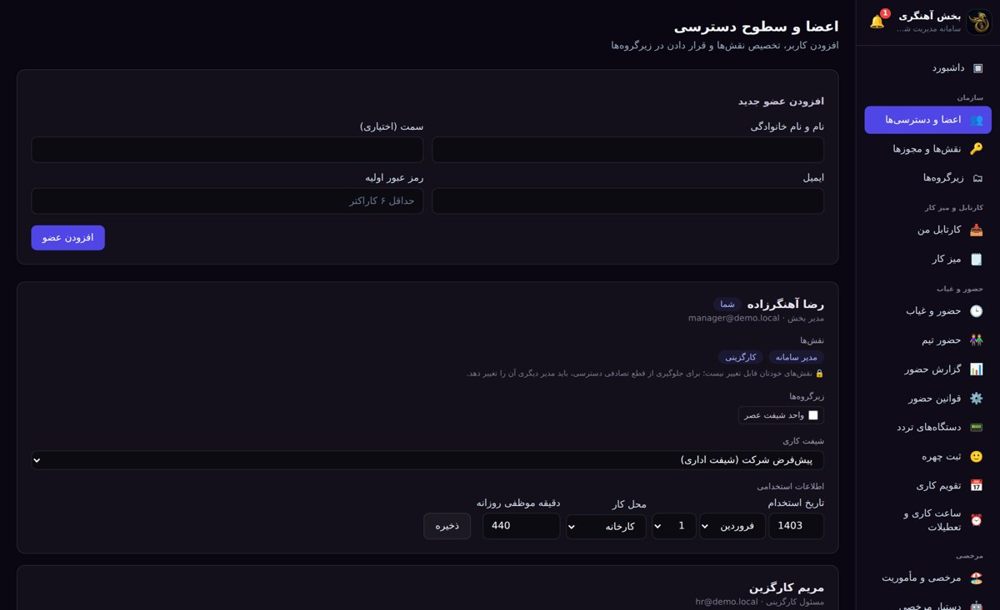
اعضا — تخصیص نقشها، گروهها و ساعت کاری به هر فرد
- عضو جدید را اضافه و به یک یا چند نقش و زیرگروه متصل کنید.
- ساعت کاری شخصی، تاریخ استخدام و محل خدمت هر فرد را تنظیم کنید.
- منابع انسانی میتواند دسترسیهای هر فرد را در محدودهٔ زیرگروههای خود ببیند و تنظیم کند.
نکته: اگر برای فردی ساعت کاری شخصی تعیین نشود، ساعت کاری «گروه» او اعمال میشود (فصل ۹).
سطح دسترسی بر پایهٔ نقشهاست؛ هر نقش مجموعهای از مجوزهای دقیق دارد و به افراد تخصیص مییابد.
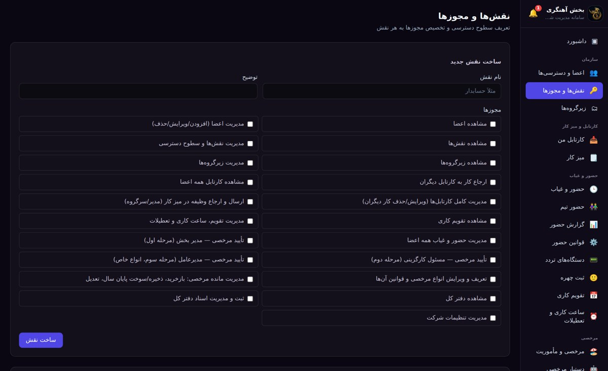
نقشها — تعریف نقش و انتخاب مجوزهای دقیق
- نقش جدید بسازید (مثل «کارگزینی») و مجوزهای لازم را برایش فعال کنید.
- مجوزها شامل مدیریت اعضا، تأیید مرخصی، مدیریت حضور، تقویم و… هستند.
- سپس نقش را از بخش «اعضا» به افراد موردنظر تخصیص دهید.
نکته: نقش «مدیر سامانه» همهٔ دسترسیها را دارد و همیشه حداقل یک مدیر کامل در سامانه حفظ میشود.
۹
🗂زیرگروهها و ساعت کاری گروهی
ساختار سازمانی شرکت بهصورت درختی تعریف میشود و هر زیرگروه میتواند «ساعت کاری اختصاصی» داشته باشد که اعضای آن بهصورت خودکار آن را به ارث میبرند.
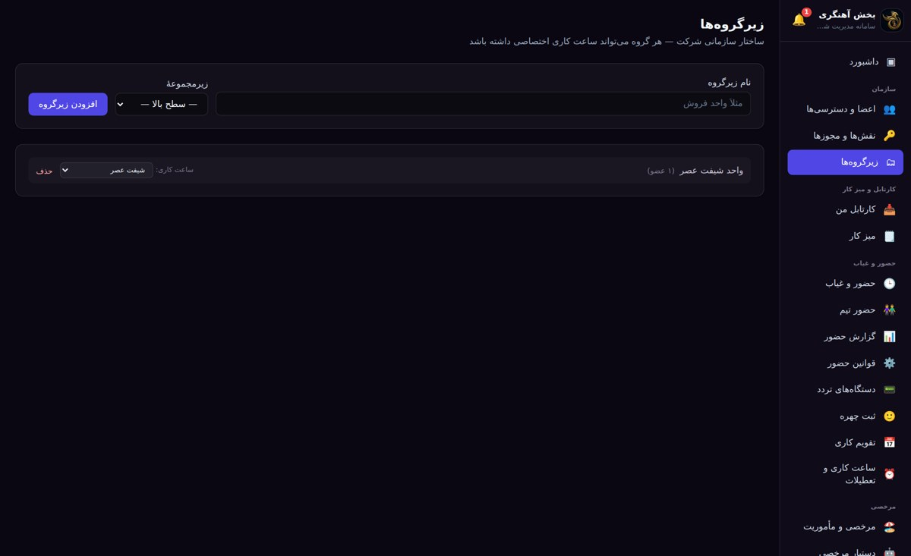
زیرگروهها — انتخاب ساعت کاری برای هر گروه
- زیرگروه جدید بسازید و در صورت نیاز آن را زیرمجموعهٔ گروهی دیگر قرار دهید.
- از منوی «ساعت کاری» روبهروی هر گروه، یک شیفت (مثل «شیفت عصر») انتخاب کنید.
- هر فردی که به این گروه اضافه شود، همان ساعت کاری گروه برایش اعمال میشود.
اولویت ساعت کاری: ابتدا برنامهٔ شخصی فرد، سپس برنامهٔ گروه، و در نهایت برنامهٔ پیشفرض شرکت.
هر کاربر میتواند تصویر پروفایل خود را بگذارد و رمز عبور خود را تغییر دهد.
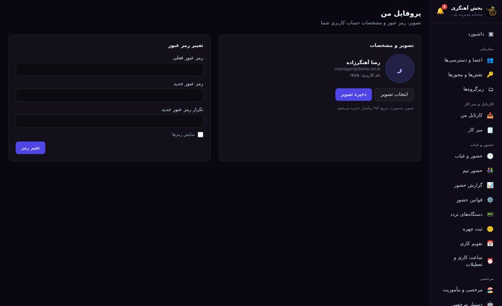
پروفایل من — آواتار و تغییر رمز عبور
- «انتخاب تصویر» را بزنید؛ تصویر بهصورت مربع ۲۵۶ پیکسل ذخیره میشود، سپس «ذخیره تصویر».
- برای تغییر رمز: رمز فعلی، رمز جدید و تکرار آن را وارد کنید.
- برای اطمینان، گزینهٔ «نمایش رمزها» را فعال کنید تا مقادیر واردشده دیده شوند.
نکته: آواتار شما در نوار کناری و کنار نامتان نمایش داده میشود.